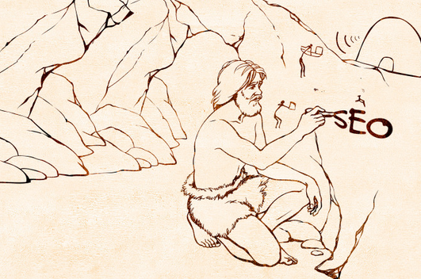

近日，SEL专栏作家Tomas Stern对SEO的发展历程进行了简要的梳理。讲述了从1991年至今SEO所经历过的几个阶段，并简要说明了SEO的未来发展问题。
互联网诞生之初，人们对SEO并没有什么概念。而伴随着互联网的高速发展，SEO也由最初的“单细胞生物”进化成了有着复杂结构的“高等生物”。由简到繁，SEO从未停下过发展的脚步，如今的SEO可谓是日益步履维艰，引得不少站长高呼“SEO已死”。
如今的SEO已不再是发发外链、改改Title、Tag了。如果至今你仍在做着这类事的话，那么SEO早就死了。互联网发展至今，早就已经不再局限于PC端了，移动设备的普及大大加速了移动互联网的发展进程，不少站长的战场也由PC端转向了移动端。至此，SEO的主市场俨然已由PC端发展到了移动端。
生命起源（1991-2002）

1991年8月6日，蒂姆·伯纳斯·李搭建的网站（http: //info. cern. ch/）正式上线了，这也是世界上的第一个网站，它向世人解释了什么是万维网，如何使用网页浏览器、如何建立一个网页服务器…… 之后几年中，万维网开始逐步的完善。渐渐地，用户信息的可用性得到了提高与优化。
最终，当网站遍地开花之时，新的烦恼又出现了：人们该如何最快的通过互联网找到自己想要的网站、或内容呢？于是乎，搜索引擎便随之诞生了。1993年，包括Excite搜索引擎在内的搜索平台彻底颠覆了互联网信息的分类管理，这也使得信息搜索变得更加简便。
注：Excite搜索引擎创建于1993年，为ARCHITEXT公司旗下的产品，是美国使用最早出现的，使用最广泛的搜索门户网站之一，该网站界面友好，提供了关键词、词组和自然语言等多种检索方式。
不久之后，雅虎（创建于1994年）和谷歌（创建于1997年）加入了搜索战场，再次简化了数据的索引和传送，从而提高了搜索效率。
搜索引擎的诞生也是SEO最初的舞台。这个时期，市场营销人员通过关键词优化、标签优化、外链建设等方式来达到提高网站搜索引擎排名的目的。而且，此时的搜索引擎仍处于婴儿期，往往一个新算法的更新得花上好几个月才能完成，这也给了黑帽SEOer们钻空子的大好机会。
而后来的搜索引擎巨头们也在此时看到了搜索市场的巨大潜力。
生成初期（2003年-2005年）

在这个时期，黑帽SEO大行其道。为了给网站们提供一个更加公平的竞争平台，谷歌搜索开始了搜索引擎技术方面的进一步探索。这段时间里，谷歌发布了很多算法更新，改进了惩罚机制，加大了对垃圾外链、关键词堆砌等作弊手段的打击力度。
通过对信息价值以及内容相关性等方面的提高，搜索引擎终于迈入了通过用户搜索历史推荐搜索的第一个阶段。同期，也开始通过定位用户地理位置相关信息在搜索结果中加入了更多推荐信息。
在SEO的这个阶段中，市场营销人员将主要的精力都放在了外链建设上，以便增加搜索曝光率。
也是在这个时期，谷歌以“don’t be evil”为座右铭表明了其规范搜索结果的决心。总之，这个阶段，索引擎巨头们都意识到了个性化与用户体验的重要性。
中古时期（2006年-2009年）

当搜索引擎发展至这个阶段，用户需要的是更加个性化、全面化、响应式的搜索体验。搜索引擎也开始转向了全局搜索机制，搜索结果中已不再只是以文本的形式呈现，同时也将图片、视频等元素已并加入了搜索结果之中。比如，谷歌搜索结果中还包含了Google News实时更新的内容、来自Twitter的信息等，更加注重内容的时效性以及用户的关注点。
2008年，谷歌发布了Google Suggest，即搜索关键词建议系统，结合关键词研究工具、Google Trends，Google Analytics等工具、并通过用户搜索历史、搜索趋势等帮助用户自动完成搜索单词、搜索热门艺人音乐、查找手机型号等等。从而提高了内容的可用性，给用户推荐更多的相关内容。
而这一阶段的SEOer们也更明白了用户体验的重要性，将更多的精力倾注在了网站设计以及个性化内容等方面。此外，不少站长也看到了新媒体的重要性以及发展潜力，企图通过新媒体消息的时效性来增加网站的曝光率。
启蒙时期（2010年-2012年）

2010年到2012年这段时间内，SEO市场发生了很大的变革，无论是品牌上、还是内容质量方面、还有用户关注的内容、以及惩罚机制等等都有了不小的改变。
其中，最显著的莫过于谷歌对关键词优化、内容质量、以及过度优化这几个方面的态度，这些也对搜索结果排名产生了很大的影响。如果不符合谷歌搜索机制的站点，即使是像J.C. Penney和Overstock这样的大网站也同样会遭到被K的命运。
随着新的搜索规则而来的就是全新的搜索特性，比如搜索用户越来越重的好奇心、日益复杂的社交关系、以及网站的可达性等等，也导致了新事物的诞生，如谷歌知识图谱（Knowledge Graph）。搜索机制也由全局搜索慢慢向局部搜索迈进。比起通过点击网页获得答案，更多用户更希望的是直接在搜索结果页中得到自己想要的一切。因而看准机会的谷歌马上开始行动了，它改进了Google Suggest功能，给用户提供更快速的查询体验、并直接在搜索结果页中展示给用户。
此外，这段时期的社交媒体也呈现出了极其迅速的发展趋势，为了顺应这种市场需求，谷歌推出了Google+。
在这样的背景下，为了成功的优化一个网站，SEOer们不仅需要在内容的质量上下功夫，而且内容分享也成了一项必不可少的组成部分。当网站内容通过社交媒体等渠道分享出去后，收获的也不只是外链和曝光率，同时也对网站的权威性建设带来了很大的帮助。
社交媒体与SEO的结合也促使了信息时代的碎片化：快节奏化、个性化、以及更加细分化的信息。
当代（2013至今）

当今的SEOer们就像站在十字路口上，在个性化与个人隐私两点间徘徊。在如今这个方方面面都被搜索引擎和科学技术入侵的时代，人们在哭诉信息安全和个人隐私问题的同时，却依旧无法摆脱它们。
诸如谷歌这样的大企业通过分析用户的搜索历史、地理位置、使用设备等数据来完善自己的产品，而市场营销人员则利用这些信息来达到内容优化的目的。
在这个时期，SEOer们的战场也由PC端转向了移动端，你的内容、你的网站、你的产品必须满足移动设备需求、符合局部搜索机制。同时，以谷歌为首的搜索引擎们也在移动搜索算法方面动做不断，从用户体验到移动设备友好度，移动搜索引擎算法的改进也意味着，一旦站点的移动搜索优化没做好，很可能就会失去移动互联网这片市场，即使是短暂的失去也很可能会带来惨重的损失。
碎片化内容、响应式设计、移动设备友好度、以用户意图为导向……这些都是当下SEOer们需关注到的搜索特性。总之，现下的SEO最需要做到的就是内容的个性化与质量方面的探索。
展望未来
对于未来，我们只能预测，谁也无法给出一个肯定的答案。但无疑以用户为导向的内容建设、个性化内容推荐、高质量的内容都是SEOer必须关注到的点。
而对搜索引擎的要求无疑是日益趋向智能化，通过最少的操作步骤得到想要的信息数据便是用户所期盼的。当然，SEOer们也需兼顾PC端和移动端两个入口的优化工作。
当搜索引擎算法不断完善后，更多的规则、以及惩罚机制也将迫使SEOer们寻找新的突破点，但比起各种黑帽、作弊行为，做好网站内容和用户体验、与用户建立良好的互动关系、做好社交媒体营销等几个方面无疑是最保险、也行之有效的SEO策略。
来源：http://www.chinaz.com/web/2015/0626/417424.shtml#g413091=1
点我分享笔记
<p style="font-size:14px;">笔记需要是本篇文章的内容扩展！</p><br> <p style="font-size:12px;"><a href="../tougao.html" target="_blank">文章投稿，可点击这里</a></p> <p style="font-size:14px;"><a href="./runoob-user-test-intro.html" target="_blank">注册邀请码获取方式</a></p> <h3 class="text-muted"><i class="fa fa-info-circle" aria-hidden="true"></i> 分享笔记前必须<a href=".." class="runoob-pop">登录</a>！</h3> <p><a href="./runoob-user-test-intro.html" target="_blank">注册邀请码获取方式</a></p>